HISTORIA DE UNA PASIÓN I
El jabalí, el monte y el origen de una Peña
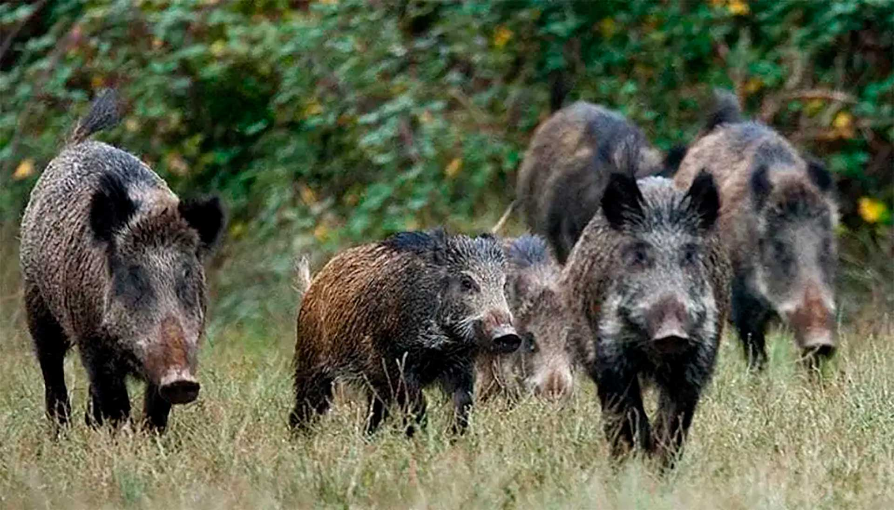
Antonino Maciá Vicente (1930-2020) fue una de esas personas carismáticas, capaces de estimular el esfuerzo colectivo para emprender proyectos importantes. Natural de Almansa, aunque pasó parte de su infancia y juventud en Monforte del Cid, a partir de los años 50 desempeñó una excelente labor profesional en las estructuras sindicales de Agricultura y Ganadería (Hermandad Sindical de Labradores y Ganaderos), asumiendo importantes responsabilidades de gestión y planificación.
Antonino Maciá fue un gran aficionado a la caza deportiva. Dados sus conocimientos y experiencias en el ámbito cinegético y, en general, en el terreno de los espacios rurales y forestales, se convirtió en dinamizador de una de las asociaciones deportivas almanseñas más importantes: la Peña Jabalí. Esta asociación desempeñó un papel fundamental en la práctica de la caza mayor en el término de Almansa durante los años 70 y 80 del pasado siglo, hasta su disolución a principio de la década de los 90. Podemos reconstruir su génesis y andadura precisamente a partir de los completísimos archivos documentales y los diarios personales del propio Antonino Maciá, que sus familiares conservan íntegramente.

▶ Ver vídeo sobre Antonino Maciá
La actividad cinegética en Almansa ha estado gestionada nada menos que desde 1918 por la Unión Cinegética Almanseña (UCA), asociación que en la actualidad continúa desarrollando una excelente labor en este campo. El coto almanseño es geográficamente variado, con amplios espacios de somontano, dehesas y serranías forestales que ocupan las estribaciones de la Sierra de Enguera, en los confines del Sistema Penibético. El término presenta una gran riqueza de especies de caza menor (conejo, liebre, perdiz roja, codorniz, torcaz, etc…). Sin embargo, las especies de caza mayor, que en otras épocas poblaron la mayoría de los bosques mediterráneos, desaparecieron en estado natural con una única excepción: el jabalí.
El jabalí europeo (Sus Scrofa Scrofa) es una especie muy resistente y con una gran capacidad de adaptación. Coloniza cualquier región boscosa y sabe aprovechar igualmente los espacios abiertos, donde encuentra alimento en áreas roturadas. Su adaptabilidad alimentaria, su resistencia y la desaparición de casi todos sus depredadores naturales provocaron que el número de individuos aumentase considerablemente en muchas zonas desde mediados del s. XX.
La proliferación de jabalíes en el término de Almansa a principios de los años 70 empezó a convertirse en un problema para las actividades agropecuarias. En una instancia remitida el febrero de 1972 al Servicio Provincial Pesca Continental, Caza y Parques Nacionales, José Julián Sánchez Gascón, presidente de la Hermandad Sindical de Labradores y Ganaderos de Almansa, señala:
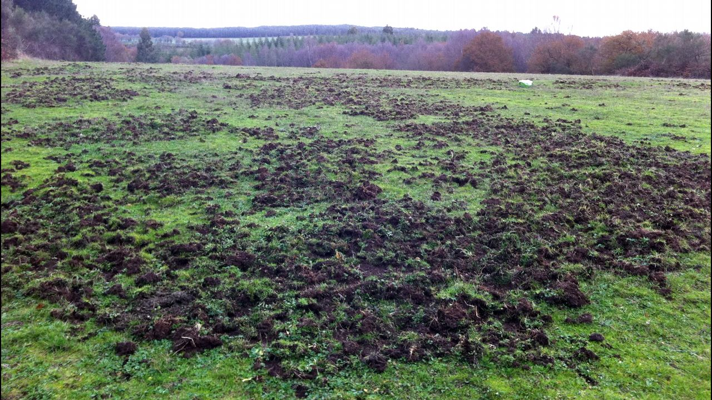
“Desde hace varios años, una extensa zona del término municipal se está viendo afectada por la presencia de jabalíes, originando cuantiosos daños en las fincas privadas de dicha zona. Las reclamaciones de los agricultores afectados son constantes …… el jabalí se está extendiendo y atacando ya a los viñedos y cultivos de regadío de mucha más proximidad al casco urbano…la repoblación (sic) de este animal dañino ha crecido en el pasado año, debido al incendio de la zona de monte pinar del término municipal de Mogente (Valencia), que los desplazó hasta Almansa…. A fin de amortiguar, en lo posible, los daños que el jabalí viene causando, se desea organizar una batida, el próximo día 20, en la mancha cuyo boceto se une al presente.”
Este escrito viene acompañado por una nota de la Unión Cinegética Almanseña en la que se indica el pleno acuerdo por parte de la UCA.
Las autoridades provinciales, en principio, se mostraron conformes ante esta solicitud. Sin embargo, el Servicio Provincial planteó una cuestión problemática. En oficio de contestación fechado el 10 de febrero del mismo año, la Jefatura Provincial del Servicio señala que “sólo se podrán autorizar monterías en aquellos terrenos de régimen cinegético especial cuyo aprovechamiento principal sea la caza mayor…. Por lo tanto, en el coto de la Unión Cinegética Almanseña, que está calificado como de caza menor, no pueden darse monterías”. En decir, existe un problema técnico para autorizar esta iniciativa de control de la población de jabalíes. Sin embargo, el propio servicio ofrece una alternativa al señalar en el mismo escrito que “….no obstante, con el fin de paliar los daños a los que hace referencia en su escrito, puede organizar ganchos con el permiso del titular del coto en los que el número de escopetas y perros sean inferiores a los indicados para una montería”.
Con el plácet administrativo, se procedió a la organización de batidas durante la temporada de 1972, en distintos sectores del coto de Almansa. Estas batidas contaban con entre 20 y 35 puestos, más ojeadores. El importe de inscripción por puesto más habitual es de 100 pesetas, aunque en algunas ocasiones ascendió a 200 pesetas, según consta en los estadillos del resumen anual de la campaña elaborados por Antonio Maciá. Paralelamente, se lleva a cabo un programa de esperas nocturnas durante los meses de julio y agosto, con los pertinentes permisos administrativos. En estas esperas, según un oficio del Instituto para la Conservación de la Naturaleza (ICONA), los tiradores participantes fueron:
José Pérez Setíén
José Rodríguez López
Antonino Maciá Vicente
Antonio Cuenca Mora
Guillermo Abarca González
Eduardo Rodríguez García
Juan del Rey Sánchez
Rafael Tomás Ribera
Alfredo Martínez Roig
Norberto Hernández Aroca
Es en esos momentos cuando se gesta la constitución formal de la Peña Jabalí. Un grupo de participantes en las batidas y esperas decide crear una asociación estable al efecto. Además de elegir un comité electivo y fijar unas normas de funcionamiento, el grupo decide dotarse de una especie de uniformidad identificativa.
HISTORIA DE UNA PASIÓN II
Los diarios de cochinos: la memoria de cada jornada
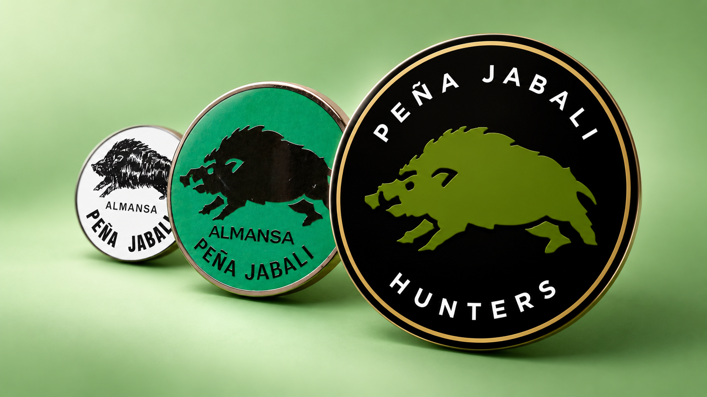
Merced a las gestiones de Antonino Maciá, se contacta con diversas empresas de Alicante, Valencia y Madrid para encargar la elaboración de chapas y medallas metálicas, emblemas y distintivos con un logo reconocible: la silueta de un jabalí. Antonino Maciá se mostró meticuloso e inflexible al respecto. En una carta remitida a la empresa ETIVAL, de Sueca, rechaza las etiquetas elaboradas por dicha firma, al considerar que no se ajustan a las características del pedido efectuado. La argumentación es contundente, jocosa y merece la pena ser transcrita:
“Con esta fecha y por agencia de transportes he procedido a devolver el paquete que me tienen remitido, conteniendo las etiquetas que me han fabricado. Esta devolución ha sido motivada: 1.-Por no ajustarse al original que dejé en sus oficinas. 2.- El animal que figura en la etiqueta no es un jabalí, ni siquiera se le parece, pues ….el jabalí tiene las orejas recortadas, duras y recogidas. El bicho de la etiqueta tiene una especie de pañuelos…el jabalí tiene los colmillos arqueados en sentido contrario al de la etiqueta, que más bien parecen dos cuernos….el jabalí es opulento en su mitad delantera, y estilizado en la trasera…. En una palabra, ustedes debieron ajustarse al modelo que les dejé.”
En un anexo, Antonino Maciá adjunta este escrito fotografías de jabalí para información de los litógrafos valencianos. Afortunadamente, la elaboración de estos emblemas fue finalmente concretada con éxito merced a la colaboración de otras empresas.
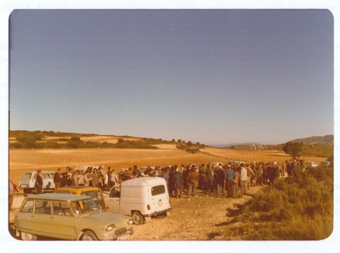
La dinámica de la Peña Jabalí adquiere velocidad de crucero a partir de 1974. El grupo se constituye de modo oficial a principios de ese año, con una directiva y estatutos registrados. Su programa de actividades incluye la organización de batidas y esperas, así como actos de convivencia, como la comida de hermandad celebrada en Belén en abril de 1974, en la que se consumieron las piezas cobradas en una batida reciente que no habían sido entregadas al Asilo de Ancianos. Antonino Maciá actúa en todo momento como organizador, registrador y contable, reuniendo un exhaustivo archivo documental sobre la trayectoria de la Peña, en el que se incluyen no sólo la programación de los distintos eventos, sino también las normas específicas para los puestos, ojeadores y realas de perros.
En estos años, Antonino Maciá elabora lo que él denomina “diarios de cochinos”. Se trata de anotaciones sistemáticas manuscritas en las que, con un estilo muy personal, recoge las impresiones de cada una de las batidas y esperas efectuadas, con datos precisos y una narrativa escueta y concisa. Sirva como ejemplo la transcripción de las anotaciones recogidas en el diario correspondientes a la jornada del 3 de abril de 1977:
“Con una asistencia de más de 140 escopetas, se bate la mancha Quemado de Garrido, para 126 puestos. No sé si hay o no jabalíes. Lo cierto es que, después de colocar a 2 en muchos puestos, salen con los perros muchas escopetas. El tiroteo es fantástico. El resultado, un fracaso tremendo. Sólo se matan 2 jabalíes, hembras, una preñada, con 4 dentro. Aunque no haya cochinos, ha fallado algo, que habrá de resolverse.”
O, de modo más forense, el relato de una espera celebrada en agosto de 1976:
“Sastre, Tamarit, su hijo y Javi se van a Hoya Matea. A Sastre le entra y no lo ve. Se le va. Me voy a los Hermanillo. El Bancal de las Higueras está empapado. Me hago una casita con 8 pacas. A las 10 veo entrar dos, uno gordo y otro pequeño. Se paran tras las pacas, a unos 100 metros. Disparo. Salen huyendo tres. Me desilusiono …..”
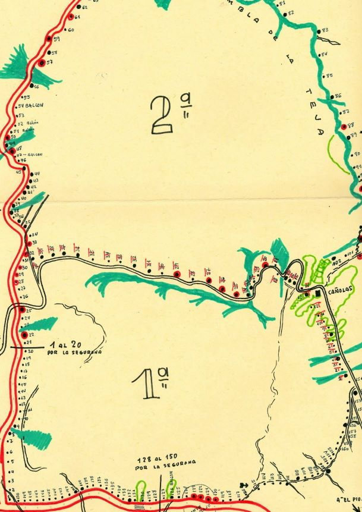
En estos diarios, Antonino Maciá elabora concienzudamente estadillos anuales sobre los resultados de la campaña en cuanto a piezas cobradas. Reproducimos las cifras de jabalíes abatidos correspondientes a los años 1975-79, según la modalidad de caza, al considerar que pueden revestir interés:
| AÑO | Esperas | Batidas | Total |
|---|---|---|---|
| 1975 | 29 | 23 | 52 |
| 1976 | 14 | 43 | 57 |
| 1977 | 41 | 29 | 70 |
| 1978 | 23 | 18? | 41 |
| 1979 | 84! | 27 | 111 |
Además de estas interesantes anotaciones, la documentación archivada por Antonino Maciá contiene datos y evidencias interesantes sobre las solicitudes de autorización de eventos cinegéticos, desarrollo y condiciones de estos eventos e incluso instrucción de diligencias disciplinarias por utilización de municiones no autorizadas.
HISTORIA DE UNA PASIÓN III
El monte sobre el papel: cómo se organizaba una batida
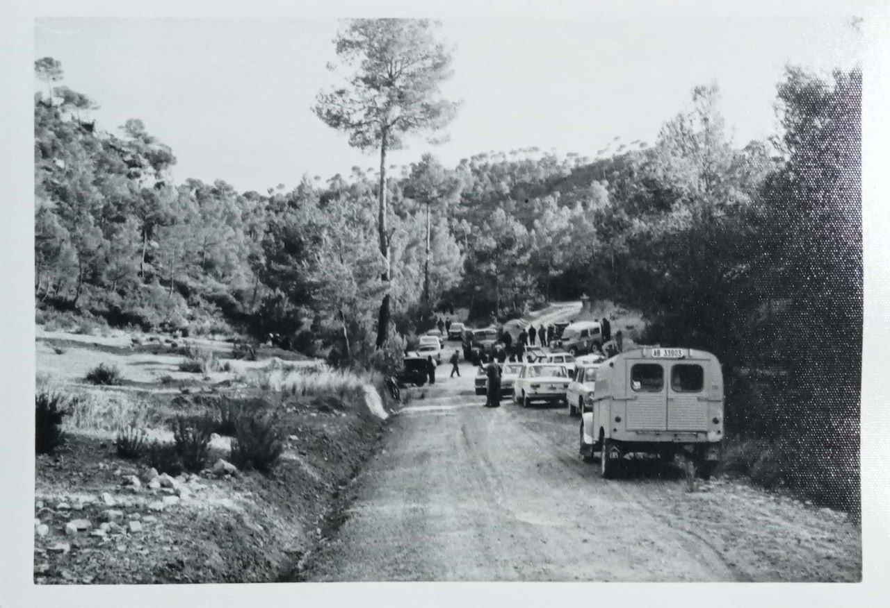
La organización de una batida al jabalí es una operación compleja que requiere una cuidadosa planificación. Es necesario perfilar meticulosamente el área a batir, el perímetro de la zona, la distribución de los puestos de tiradores y ojeadores, los recorridos de las realas, los distintos accesos… Para ello, es imprescindible adquirir un conocimiento preciso de la topografía y características del terreno, además de tener experiencia acerca de los comportamientos de la presa en su hábitat natural. Igualmente, es necesario coordinar las actuaciones preparatorias previas, tanto a nivel de equipos como administrativos. En este sentido, hay que destacar la participación de los hermanos Isaac y Víctor Martínez López, de Calzada de la Calatrava (Ciudad Real), que se encargaron durante muchas temporadas de suministrar la realas con una eficacia y competencia extraordinarias.
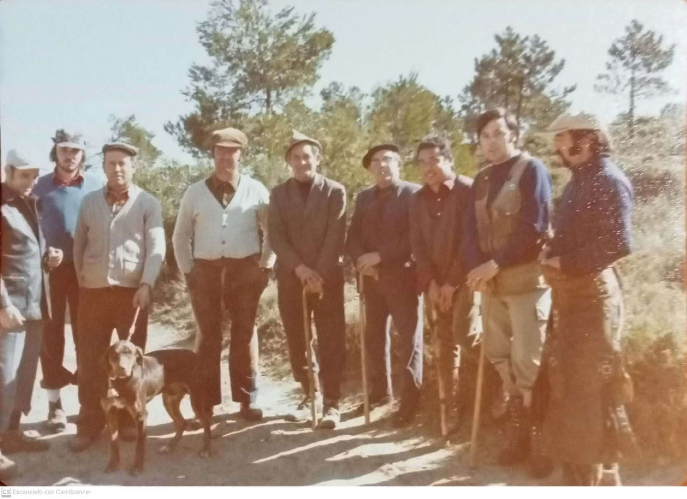
Antonino Maciá tenía una extraordinaria aptitud para integrar estos factores, y por ello se dedicó durante años a diseñar y planificar los ganchos y batidas, con el auxilio de otros integrantes de la Peña (como Francisco Hernández -Pao- y Javier Maciá), trazó minuciosamente planos detallados de las áreas a batir, así como la distribución de los puestos. La mayoría de estos documentos obran en poder del veterano peñista Francisco Hernández, quien los conserva perfectamente clasificados por zonas y fechas. La distribución de estos eventos puede resumirse cronológicamente (y por áreas) de la siguiente forma:
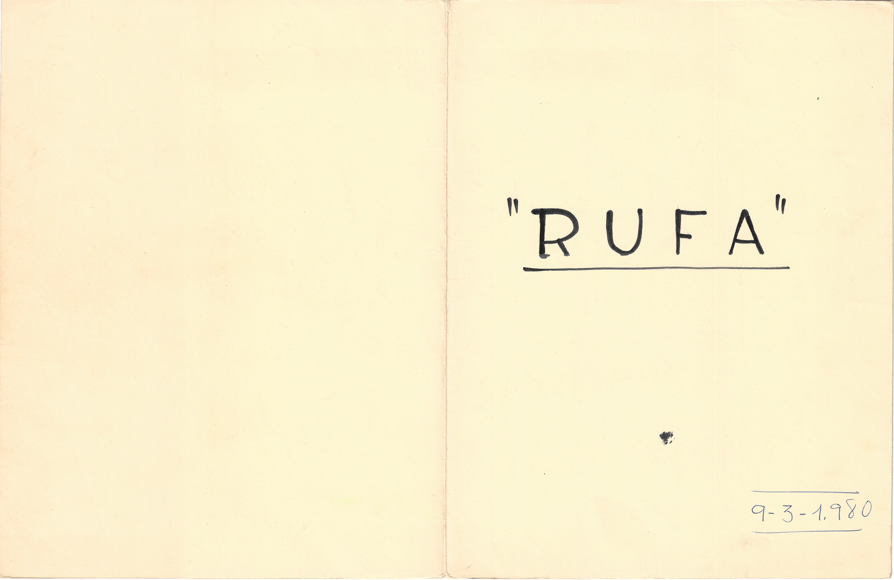
1972
Hoya Matea (posiblemente, la primera batida organizada plenamente por la Peña), Quemado de Garrido.
1973
Borregueta, Quemado de Garrido, La Milaria.
1974
El Piojo, Quemado de Garrido. Las Huesas, La Milaria, Piinarejos.
1975
El Piojo, Quemado de Garrido, Cabezo del Moro, La Milaria, Pinarejos.
1976
El Piojo, Quemado de Garrido, Pinarejos, La Milaria.
1977
El Rebollo, La Silla.
1978
Los Taconeros, La Silla, Barranco de la Mosca-Ardacheras.
1979
Los Taconeros, La Silla.
1980
Quemado de Garrido, Barranco de la Mosca-Ardacheras, La Milaria.
1981
La Silla, El Piojo, Barranco de la Mosca-Ardacheras, El Manzanero, La Milaria.
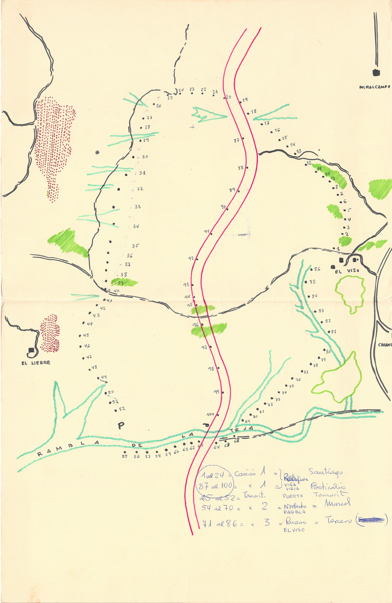
De todos estos eventos, quizá el más importante fue la batida que tuvo lugar en el Quemado de Garrido en abril de 1976. Se acotó un amplísimo perímetro, con una línea travesera transversal, distribuyéndose un total de 160 puestos.
Durante la década de los 80, la Peña Jabalí, plenamente consolidada, se desarrolla y diversifica sus actividades. En vistas de la importancia que el núcleo original ha adquirido, la Peña inicia trámites para su conversión efectiva en sociedad deportiva.
El acta fundacional de la sociedad está fechada el 12 de septiembre de 1980 y en ella consta que el grupo original de la sociedad propone la constitución de un club deportivo que se dotará de un estatuto y un reglamento acordes con lo dispuesto por la Federación Española de Caza. Los firmantes de esta acta fundacional fueron:
Juan Alfaro Fort
José Clemente Martínez
Francisco Hernández Cuenca
ANTONINO MACIÁ VICENTE
Deogracias Ruano Villaplana
Manuel Tamarit García
Rafael Tomás Rivera
Fernando Rodríguez Díaz
Francisco Navalón Navarro
Alfonso Andújar Herráez
Vicente González González
Antonio Jiménez González
Juan del Rey Sánchez
José Luis Sánchez Honrado
J. Manuel Tamarit López
Javier López Gómez
Enrique Ibáñez Martínez
En este documento fundacional se propone la primera junta directiva como club deportivo. Esta junta estaba compuesta por las siguientes personas:
PRESIDENTE.- Manuel Tamarit García
VICEPRESIDENTE.- Juan del Rey Sánchez
TESORERO.- Javier López Gómez
SECRETARIO.- Francisco Navalón Navarro
La Peña Jabalí, a partir de este momento, inició el proceso para su constitución efectiva en sociedad deportiva. En septiembre de 1981 se presenta ante notario un acta para elevar al Consejo Superior de Deportes, a través de la Federación Nacional de Caza, el acta fundacional de la sociedad y los documentos pertinentes para su inscripción en el registro de sociedades. Se adjunta al acta un primer presupuesto para la temporada de caza 1981-82. En este presupuesto se realiza una estimación de gastos cifrada en 70.000 pesetas, desglosados en gastos de temporada (40.000 ptas.), administración (20.000 ptas.) e imprevisto (10.000). El capítulo de ingresos se cubriría hasta dicho importe exclusivamente a partir de las aportaciones de los socios. Firman este documento Francisco Navalón Navarro, Deogracias Ruano Villaplana, José Manuel Tamarit López, Juan del Rey Sánchez, Manuel Tamarit García, Juan Luis Tomás Simón y Antonino Maciá Vicente. El
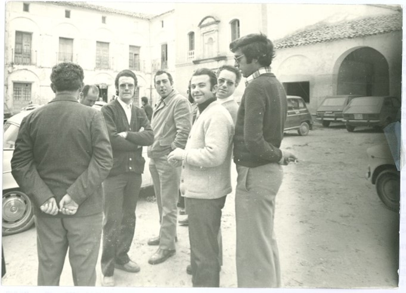
El acta es registrada notarialmente el 7 de septiembre de 1981.
La Sociedad Deportiva Peña Jabalí trató de conseguir desde el principio el patrocinio de la UCA. De hecho, la práctica totalidad de los integrantes de la Peña Jabalí lo eran igualmente de UCA. Por ello, en febrero de 1982, la Peña Jabalí aprueba una ordenanza en la que reconoce que la sociedad se constituye bajo el auspicio de la Unión Cinegética Almanseña y deberá, por tanto, atenerse al reglamento de UCA, preservando plena autonomía en su administración, funcionamiento y actividades. Igualmente, se determina en esta ordenanza que serán socios de número de la Peña Jabalí todos aquellos que lo sean de la Sociedad de Cazadores UCA y lo soliciten, sin más requisito que facilitar su filiación. Por su parte, la Unión Cinegética Almanseña, a través de su presidente, expresó sus reticencias a prestar conformidad a estas pretensiones de manera oficial y estatutaria.
Finalmente, durante 1982 se completan los trámites de formalización de la Sociedad Deportiva Peña Jabalí, al remitirse a la Federación Nacional de Caza los documentos notariales y los estatutos aprobados por la sociedad. En mayo se remite a distintos organismos comunicación oficial de que la Sociedad Deportiva Peña Jabalí se haya registrada en el CSD con el número 1408.
HISTORIA DE UNA PASIÓN IV
Más allá de la caza: una Peña vinculada al territorio
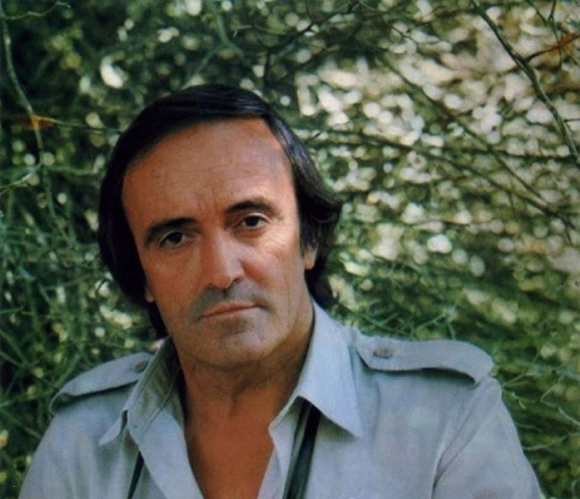
En los primeros estatutos de la Sociedad, se señalan como objetivos y ámbito funcional defender y conservar la caza, cooperando con la autoridad y sus agentes, crear y fomentar la conservación de cotos de caza, organizar competiciones deportivas o custodia y guardería de la caza, entre otros. La sede social queda fijada en la Calle Corredera, 2 (antiguo Bar Alfonsico).
Durante los años 80, la Peña Jabalí participó activamente en diversas iniciativas de conservación y promoción de los espacios forestales, más allá de las actividades propias del ámbito cinegético. Así, por ejemplo, en marzo de 1982, la Peña organizó un viaje para visitar el Parque Nacional de Caza de Hosquillo, en la provincia de Cuenca. Este viaje se planteó como una “jornada de convivencia y compañerismo entre los socios”, y contó con el pleno apoyo de las autoridades de ICONA.
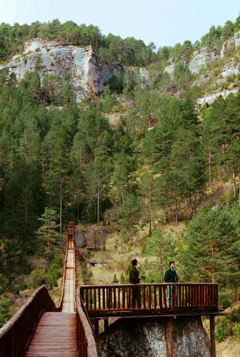
En 1985, la Peña Jabalí alcanzó un acuerdo con el Ayuntamiento de Almansa, presidido entonces por Virginio Sánchez Barberán. Este acuerdo se materializó en un convenio mediante el cual se reconocía y apoyaba la iniciativa de la Peña Jabalí de construir un albergue que se denominaría “Félix Rodríguez de la Fuente”, en honor del gran naturalista y divulgador burgalés, fallecido en accidente de aviación en 1980. Este albergue se ubicaría en la Dehesa de los Pandos, cerca del paraje de Cáñolas, en un promontorio muy bien situado. El Ayuntamiento no sólo autorizaría la construcción de este albergue, sino que también cedería el terreno y el uso del mismo a tal efecto. Según lo dispuesto inicialmente, el albergue ocuparía una superficie de 150 metros cuadrados. El presupuesto de realización se cifró en 500.000 pesetas.
Las obras de este proyecto comenzaron a buen ritmo, trazándose los cimientos, los cerramientos y los tabiques principales. Pero por diversas circunstancias y desacuerdos con el Ayuntamiento, y a falta de completar la cubierta y las instalaciones, los trabajos quedaron interrumpidos. Todavía hoy se puede visitar el edificio inconcluso, en su privilegiado emplazamiento.
Quizá una de las actividades complementarias más significativas de la Peña Jabalí fue la que se desarrolló durante el año 1980, cuando la Sociedad organizó y llevó a cabo un magnífico servicio nocturno de vigilancia de la Sierra. Los objetivos de estas patrullas nocturnas, según una circular de instrucciones emitida para informar a los participantes, serían los siguientes:
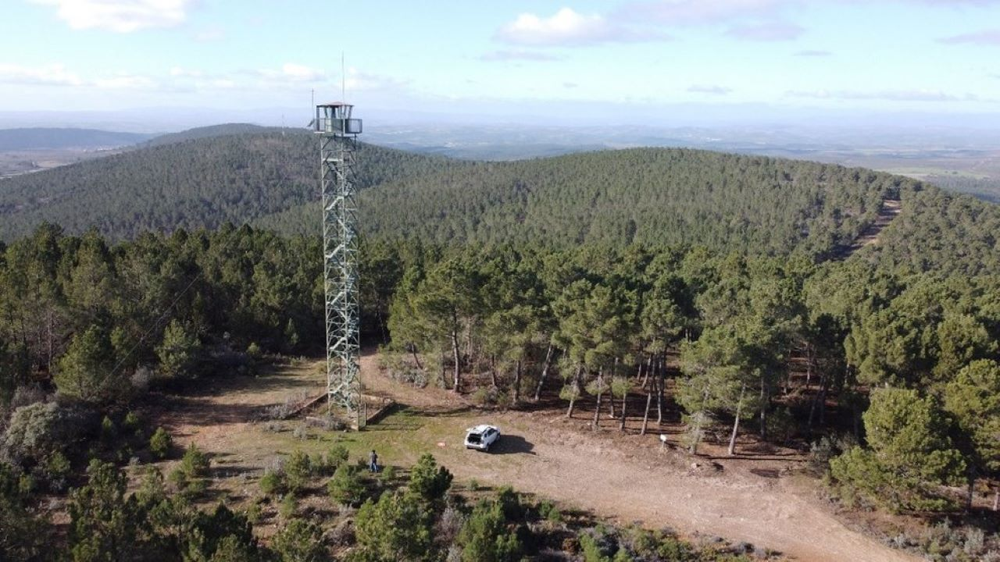
- Rellenar el parte de horarios y parajes, haciendo constar en las incidencias cualquier detalle observado con relación a vehículos, ocupados o abandonados, de los que se debe tomar matrícula; personas vistas durante el servicio; ganados sueltos en la Sierra, y cualesquiera otros que puedan constituir una prueba, en su caso.
- Pasar obligatoriamente por el observatorio del Cabezo del Moro, aunque se haya estado en contacto con el mismo por radioteléfono.
- Pasar obligatoriamente por la Fuente del Rebollo y la del Escudero, vigilando posibles restos de fuego que hayan podido encender los visitantes.
- Depositar, el mismo día de la ronda, en el Bar Alfonsico, el parte rellenado, a fin de facilitar el mismo a las autoridades.
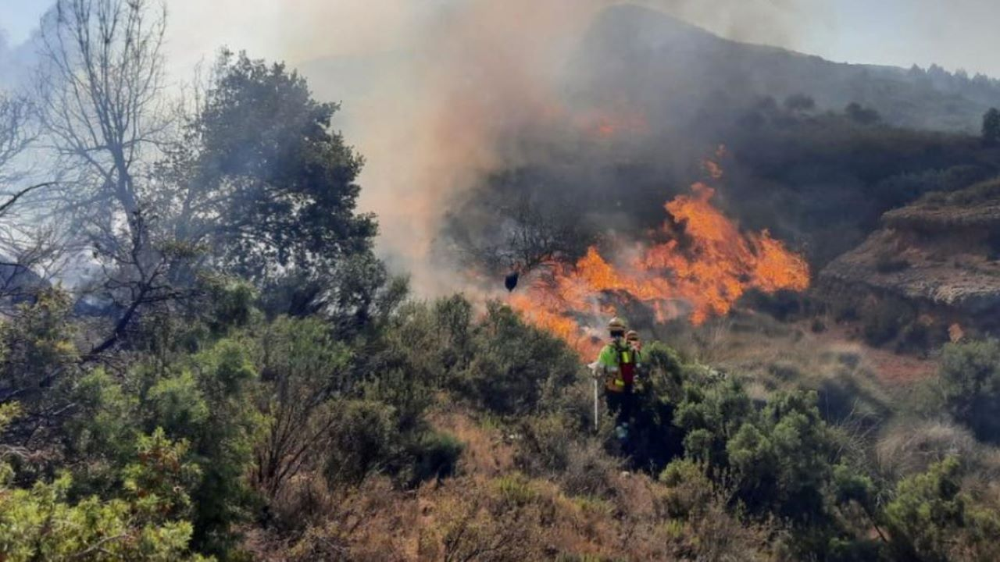
Evidentemente, estas patrullas, que se desarrollaron durante los meses de julio, agosto y septiembre, tenían como finalidad vigilar y prevenir la eventualidad de incendios forestales, de la caza furtiva y de prácticas inadecuadas en el espacio forestal. Los recorridos se realizaban entre las 10 de la noche y las 7 de la mañana, en trayectos que, frecuentemente, sobrepasaban los 120 kms. El archivo de Antonino Maciá recoge puntualmente todos y cada uno de los partes diarios de este servicio, con horarios, parajes controlados e incidencias observadas. Esta iniciativa contó con el apoyo y reconocimiento tanto del Ayuntamiento de Almansa como de ICONA.
A mediados de los años 80, los cambios en la directiva de UCA provocaron un giro en las relaciones con la Peña Jabalí. La Unión Cinegética Almanseña consideró que no era conveniente, según su criterio, que la Peña se encargará de la organización de las batidas al jabalí. Esto no significó la desaparición de la actividad de la Peña, que continuó plenamente operativa durante años, si bien con actividades restringidas a su círculo particular: esperas nocturnas, viajes de interés cinegético, eventos deportivos, mantenimiento de áreas de caza, etc…
Los integrantes de esta Sociedad Deportiva mantuvieron viva la esencia del grupo durante los años 90 y aún después. Durante más de 30 años, dinamizaron las actividades de caza mayor en Almansa como quizá ningún otro colectivo lo había hecho anteriormente.